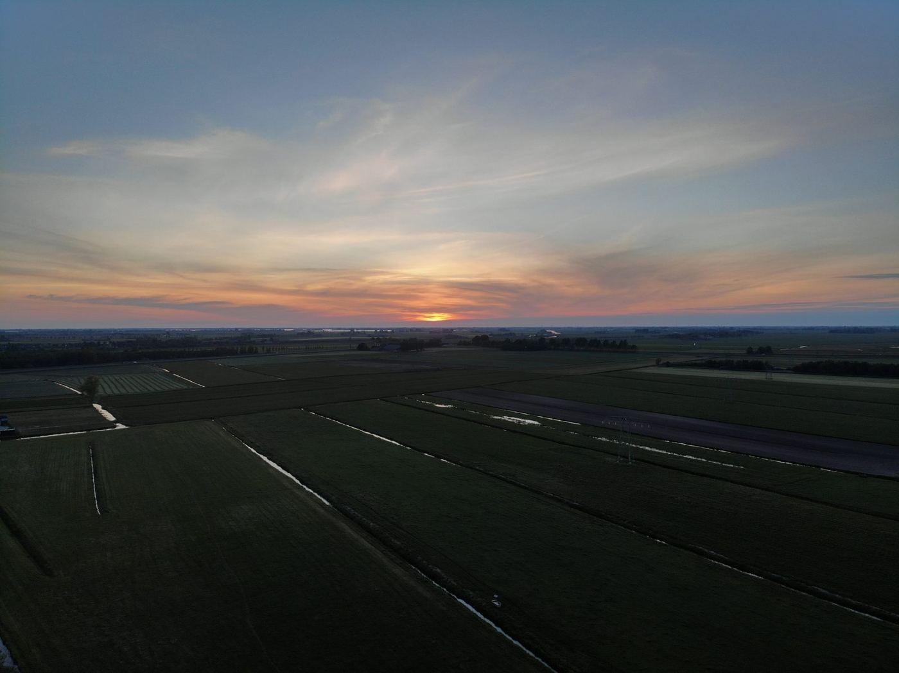

Drone
Luchtfotografie en -video
Het eiland is vanuit de lucht op zijn mooist. Ik maak foto's en video's van accommodaties, terreinen, evenementen en natuur, voor je website, verhuurplatform of social media.
- Accommodaties
- Evenementen
- Bouwlocaties
- Landschap